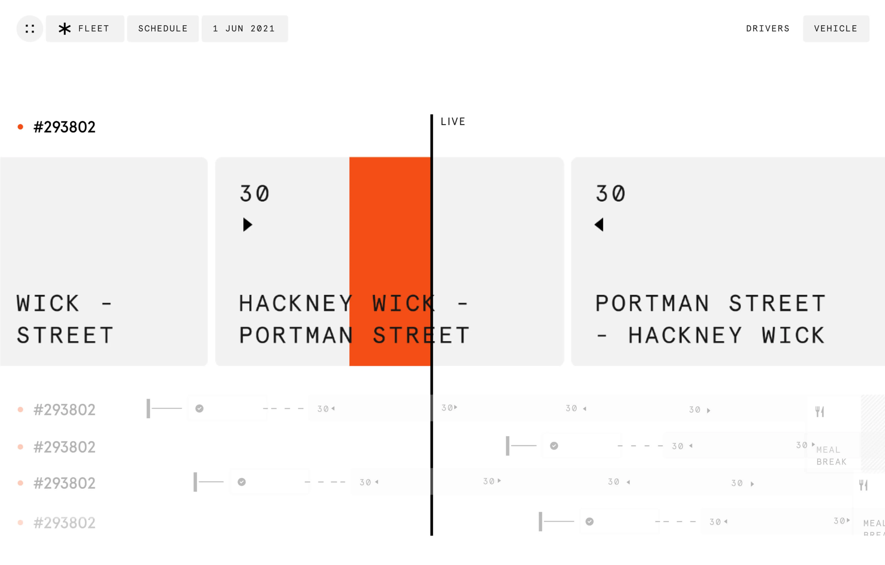
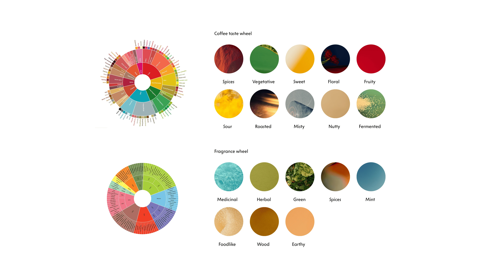
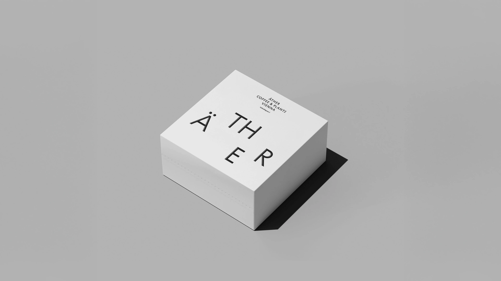
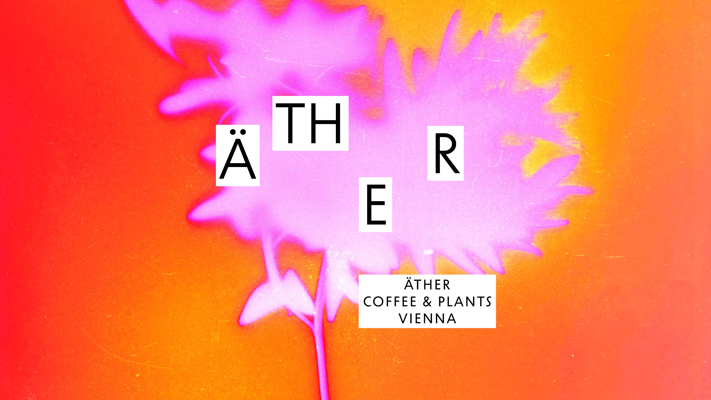

Сергей в Яндексе разделяет дизайн на жизнь и работу. Культура для него мышление результатом, а нарисованные ритуалы он называет симулятором.
Как ты определяешь культуру дизайна? Это ценности, рабочие принципы, готовность к ответственности? Или больше про команду?
Тут много можно разговаривать. Я в свободном формате начну, надеюсь, какие-то мысли ты выловишь.
Я бы разделял: есть жизнь, и там дизайн в жизни, дизайн самой жизни. Это очень широко. И есть работа – дизайн-культуры на работе. Давай начнём с работы.
В зависимости от людей, размера организации и задач, которые они решают, эта культура может появиться, а может мешать. Если подразумевать под дизайн-культурой какие-то бюрократические, процессные штуки, выстроенный процесс, по которому должны все следовать – это скорее не культура. Это симулятор. Симулятор – это когда оно хочет казаться, но не является.
Многие путают дизайн-культуру или дизайн-сингинг именно с процессной штукой, по которой надо идти всей команде, чтобы получить результат. Я так не считаю. Я отношу это к процессу.
Что я считаю культурой? Культура в большой организации – это когда люди понимают важность своей роли и важность соседней роли. Есть доверие, человек доверяет экспертизе и мыслит результатом, а не своим конкретным участком работы.
Чаще всего распространённая практика: дизайнер получил задачу от маркетинга, очень конкретно. Сделал, отдал. А потом выясняется, что это намного более широкая вещь, которую нужно было не просто сделать, а нужно было подумать: зачем ты это делаешь? И выясняется, что это вообще не надо было делать. Но когда человек мыслит «мне дал маркетинг, я как заказчик выполнил задачу, отдал – с меня сквозь» – это отсутствие дизайн-культуры.
А её присутствие – это когда человек задаётся вопросами, знает общие цели и оценивает свою роль и вклад в процесс. Насколько эффективно эта роль будет отрабатывать и насколько вклад будет полезен.
Симулятор – это когда оно хочет казаться, но не является. Многие путают дизайн-культуру с процессной штукой. Я так не считаю.
– Сергей Кудинов
Культура – это когда люди понимают важность своей роли и важность соседней роли. Есть доверие, человек мыслит результатом, а не своим конкретным участком.
– Сергей Кудинов
Как у вас в Яндексе?
В Яндексе я вижу, что дизайн-культура очень сильно развита. И не потому, что это был приказ сверху, а потому что сложилось из людей.
Люди понимают, что они делают и зачем. Есть человек, который про «зачем» думает. Это важно. И есть понимание общих целей: что мы как компания хотим.
Когда я пришёл в Яндекс, я видел, что всем интересно, почему ты это делаешь? А не просто «сделай». Это здоровый скептицизм. Эта культура позволяет высказать своё мнение, даже если ты дизайнер и тебя спросили что-то другое.
Вот это я и считаю дизайн-культурой в организации.
Когда я пришёл в Яндекс, я увидел: всем интересно, почему ты это делаешь? А не просто сделай.
– Сергей Кудинов

А на личном уровне?
На личном уровне, я считаю, культура дизайна – это, в первую очередь, честность с самим собой. Честность в том, что ты делаешь. Зачем ты это делаешь?
Если у тебя есть задача, ты должен её переосмыслить. Не просто выполнить, а понять, правильная ли она. Это требует смелости. Потому что вполне возможно, что заказчик не захочет услышать, что задача не совсем правильная.
Также это уважение к людям, с которыми ты работаешь. Понимание, что у каждого человека есть своя экспертиза, и ты должен её слушать.
И третье – это результат. Не просто процесс, а именно результат. Культура дизайна строится вокруг того, что мы все вместе делаем что-то нужное людям.
Когда я говорю о дизайне в жизни, я имею в виду то, как ты живёшь, как принимаешь решения, как общаешься с людьми. Дизайн – это не просто красивые картинки. Дизайн – это решение проблем. Если ты приходишь с утра и подходишь к проблеме с позиции дизайнера, ты будешь думать не только о себе, но и о том, как это повлияет на команду, на компанию, на пользователя.
А процессы тогда вообще не нужны?
В большой организации всегда есть системы и процессы. И они важны. Но они не должны быть выше культуры.
Я видел компании, где процессы задавили людей. Они просто идут по какому-то пути и не думают, почему они это делают.
В Яндексе процессы служат культуре, а не наоборот. Люди используют процессы, чтобы быть эффективнее, а не чтобы выполнять формальные требования.
Если у тебя есть процесс, но нет культуры – это бюрократия. Если у тебя есть культура, но нет процесса – это хаос. Нужно оба.
Как культура связана с лидерством?
Культура дизайна зависит от того, как люди ведут за собой других. Если у тебя есть лидер, который просто даёт приказы и не слушает – культуры не будет. Но если у тебя есть лидер, который слушает, объясняет, почему нужно делать именно так, и готов изменить свой взгляд, если его переубедят – вот это создаёт культуру.
Когда я пришёл в Яндекс, я увидел, что руководители не боятся высказывать противоположное мнение. И они готовы слушать. Это сильно повлияло на то, как я сам понимаю дизайн-культуру.
В хорошей дизайн-культуре ошибки – это не что-то страшное. Ошибки – часть процесса обучения. Когда я что-то делаю, я знаю, что если сделаю ошибку, мне помогут её исправить, и я узнаю что-то новое. Это очень отличается от культур, где ошибка – повод для наказания.
В Яндексе ошибки рассматриваются как возможность улучшить систему. Не отругать человека, а понять, почему это произошло и что можно изменить. Это создаёт безопасное пространство для экспериментов.
Дизайн-культура – это не что-то статичное. Это живой процесс. Компании меняются, люди меняются, задачи меняются. Культура должна адаптироваться. Но ядро остаётся: честность, доверие, результативность.
Процесс без культуры – бюрократия. Культура без процесса – хаос. Нужно оба.
– Сергей Кудинов



Книги, фильмы, люди, которые повлияли?
Я много читаю, много смотрю. Но самое большое влияние оказала жизнь.
Когда я видел компании, которые построили хорошую культуру, я учился. Когда видел компании, которые этого не сделали, учился на их ошибках.
Есть классические книги по дизайну. Есть люди, которые много пишут и говорят о культуре. Но самое важное – видеть это в действии. В Яндексе я вижу это в действии: как люди ценят друг друга, как слушают, как строят что-то вместе. Это лучший учебник.
Как ты относишься к нейросетям и AI в дизайне?
Интересный вопрос. Я вижу, что нейросети появляются во всех областях, в том числе в дизайне.
На данном уровне польза от этого есть. Они сокращают время. Но я не вижу художественной ценности. Когда смотрю на результаты нейросетей – сразу вижу нейросетевую генерацию.
Мне более приятно смотреть на ручной труд. Это художник рисует. А если художник рисует как нейросеть, так бездушно – мне невероятно неприятно это смотреть.
Короче, пока искусственный интеллект, просто один из инструментов. Будут цениться люди, которые умеют этими инструментами пользоваться и смотрят широко. Они нас не заменят. Пока не появится настоящий искусственный интеллект. Когда он появится, не знаю.
Если художник рисует как нейросеть, так бездушно – мне невероятно неприятно это смотреть.
– Сергей Кудинов
О практике
Сергей Кудинов – креативный директор Яндекс 360.